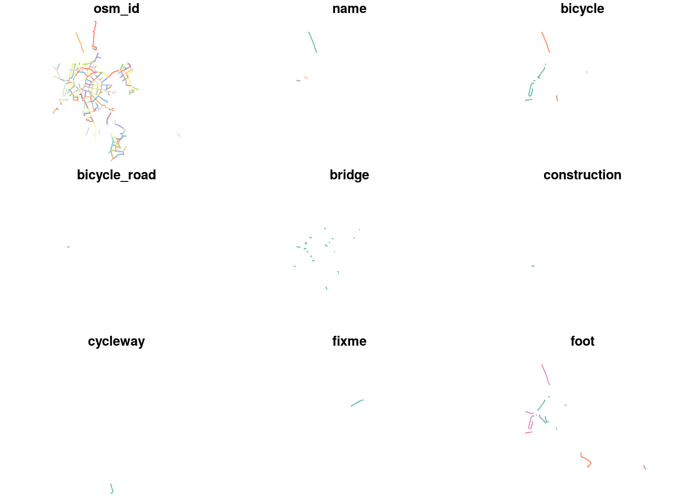
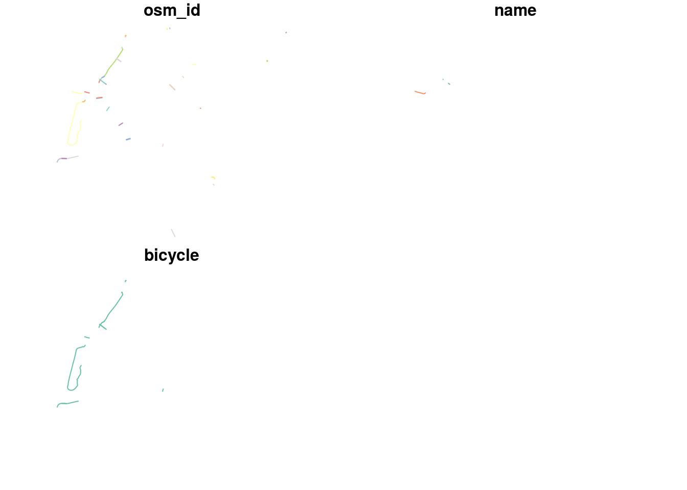

- osmdata
Mark Padgham
2017-02-27
1. Introduction
osmdata is an R package for downloading and using data from OpenStreetMap (OSM). OSM is a global open access mapping project, which anyone can contribute to or access data from (OpenStreetMap contributors 2017). People new to OSM are recommended to explore what the maps look like at www.openstreetmap.org/, where you can also sign-up to edit the map for your local area.
The aim osmdata is to facilitate access and use of OSM with R. It is fair to say that using OSM data in R, and many other languages, has never been easy. Eugster and Schlesinger (2012) describes a osmar, an R package for handling OSM data that enables visualisation, search and even rudimentary routing operations. osmar is not user friendly or able to download OSM data flexibly, as reported in an early tutorial comparing R and QGIS for handling OSM data (Lovelace 2014).
osmdata builds on two previous R packages: osmplotr, a package available from CRAN for accessing and plotting OSM data (Padgham 2016) and overpass, a GitHub package by Bob Rudis that provides an R interface to the overpass API.
The development version of the osmdata R package can be installed with the devtools (which can be installed with install.packages("devtools")) as follows:
devtools::install_github("osmdatar/osmdata")Once installed, it can be loaded in the usual way:
library(osmdata)osmdata uses the overpass API to download OpenStreetMap (OSM) data and convert the results to either Simple Features (SF) or Spatial objects, defined by the sf and sp packages respectively. overpass is a C++ library that serves OSM data over the web (see code at github.com/drolbr/Overpass-API). It has its own query language, with all queries extracting data within a defined bounding box. A query may be initiated using the osmdata function opq(), which accepts the single argument of a bounding box.
q <- opq (bbox=c(51.1,0.1,51.2,0.2))Bounding boxes may also be defined by simply passing the name of a desired area, which does not have be precise:
q <- opq (bbox="Greater London, U.K.")
identical (opq (bbox="Greater London, U.K."), opq (bbox="greater london uk"))## [1] TRUEAn osmdata query consists of an initial opq() query and one or more ‘features’, which are classified key-value pairs (see wiki.openstreetmap.org/wiki/ for detailed description of features and a list of all OSM keys).
q <- opq (bbox="greater london uk")
q <- add_feature (q, key="highway", value="motorway")The result is a list of class overpass_query that can be converted into URLs as follows:
## [1] "[out:xml][timeout:25];\n(\n node [\"highway\"=\"motorway\"] (51.2867602,-0.510375,51.6918741,0.3340155);\n way [\"highway\"=\"motorway\"] (51.2867602,-0.510375,51.6918741,0.3340155);\n relation [\"highway\"=\"motorway\"] (51.2867602,-0.510375,51.6918741,0.3340155);\n\n);\n(._;>);\nout body;"Internally, osmdata uses this to query the URLs from the base URL as follows:
base_url <- "http://overpass-api.de/api/interpreter"
res <- httr::POST(url = base_url, query = q)osmdata saves you the effort of making these custom URLs and requests, and makes it easy download the data once the query has been constructed. The corresponding data may then be downloaded as follows:
overpass data are returned in OSM XML format, and may be directly returned with
doc <- osmdata_xml (q)The function osmdata_xml() also allows data to be saved and used for subsequent queries through specifying a filename.
osmdata_xml (q, "motorways.osm")This downloads the raw data underlying OSM, in xml format by default. Let’s take a glimpse of this dataset:
doc = readLines("motorways.osm")
doc[1:5] # the first 5 lines of the raw xml file## [1] "<?xml version=\"1.0\" encoding=\"UTF-8\"?>"
## [2] "<osm version=\"0.6\" generator=\"Overpass API\">"
## [3] " <note>The data included in this document is from www.openstreetmap.org. The data is made available under ODbL.</note>"
## [4] " <meta osm_base=\"2017-02-27T10:23:02Z\"/>"
## [5] " <node id=\"104432\" lat=\"51.5739008\" lon=\"-0.2321402\"/>"If you want to use this dataset in another program, like the excellent open source GIS QGIS or OSM data editor JOSM, you can do so.
In QGIS this can then be loaded via a two-step process: Vector > OpenStreetMap > Import topology from XML... and open the doc.osm file saved previously, followed by Vector > OpenStreetMap > Export topology to SpatialLite.... The results are illustrated in the figure below:

osmdata is therefore useful even if you only want to download OSM data. The remainder of this vignette assumes that not only do you want to get OSM data using R, you also want to import and eventually process it, using R. For that you’ll need to import the data into a native R class.
These downloaded data can be directly processed by passing the same filename to osmdata_sf/sp. The following function imports the data into R as a Spatial object defined by the sp package, with:
dat_sp <- osmdata_sp (q, "motorways.osm")
dat_sp## Object of class 'osmdata' with:
## $bbox : 51.2867602,-0.510375,51.6918741,0.3340155
## $overpass_call : The call submitted to the overpass API
## $timestamp : ##------ Mon Feb 27 10:23:02 2017 ------##
## $osm_points : 'sp' SpatialpointsDataFrame with 4564 points
## $osm_lines : 'sp' SpatiallinesDataFrame with 688 lines
## $osm_polygons : 'sp' SpatialpolygonsDataFrame with 0 polygons
## $osm_multilines : 'sp' SpatialmultilinesDataFrame with 0 multilines
## $osm_multipolygons : 'sp' SpatialmultipolygonsDataFrame with 0 multipolygonsHere’s how to load the data into Simple Features:
dat_sf <- osmdata_sf (q, "motorways.osm")
dat_sfThe query, q, does not have to be submitted:
dat_sf <- osmdata_sf (doc="motorways.osm")## q missing: osmdata object will not include queryNote also that you can also pass queries directly to the osmdata_* functions, as illustrated below:
dat_sp <- osmdata_sp(q)
dat_sf <- osmdata_sf (q)2. The overpass API
The overpass API is > a read-only API that serves up custom selected parts of the OSM map data.
The syntax of queries is not easy to learn, making wrappers to it useful. An excellent place to explore overpass queries specifically and OSM data in general is the overpass-turbo website. Examples of its functionality in action can be found on the OpenStreetMap wiki.
2.1. overpass queries
overpass has its own query language which largely works by extracting data based on specific combinations of key-value pairs, with osmdata implementing a simplified version. Full details of the overpass query language are given in the Query Language Guide (and see also the overpass API Language Guide ).
As demonstrated above, an osmdata query begins by specifying a bounding box with the function opq(), followed by specifying desired OSM features with add_feature().
q <- opq (bbox="Kunming, China")
q1 <- add_feature (q, key="natural", value="water")
q2 <- add_feature (q1, key="name:en", value="Dian", exact=FALSE)The parameter exact=FALSE controls the two ways of matching key-value pairs in overpass: Either exactly and entirely, or through a partial string match. With the default exact=TRUE, this query would only return objects named “Dian”, and not, for example, any named “Lake Dian”. Using exact=FALSE will return “Lake Dian” through just specifying value="Dian".
Each successive feature added with add_feature() is added to previous features, so, for example, extending the previous query by an additional key-value pair to
q3 <- add_feature (q2, key="highway")will request all objects that are both water bodies with names matching “Dian” AND that are also highways. Unsurprisingly, this query returns no data, but the previous queries do: the filtering is more restrictive with each feature added with add_feature(). This is illustrated below by counting the number of points resulting from the queries generated previously:
# nrow (osmdata_sf (q)$osm_points) # all points in region - not shown
nrow (osmdata_sf (q1)$osm_points)## [1] 7377nrow (osmdata_sf (q2)$osm_points)## [1] 2209nrow (osmdata_sf (q3)$osm_points)## [1] 0In summary, distinct features must be requested with different queries, so it makes sense to give each query a separate name, e.g.:
dat_water <- osmdata_sf (q1)
q_highway <- add_feature (q, key="highway")
dat_highway <- osmdata_sf (q2)The function osmdata_sf returns an object of class osmdata, as described in detail below.
The detailed structure of overpass queries can best be appreciated by using the interactive online query builder, which includes a helpful corrector function for incorrectly formatted queries. An osmdata query includes the two primary fields of bbox and qry, with the latter passed directly to the overpass API. Any queries constructed with the interactive online query builder can also be pasted directly into the qry component of an osmdata query.
3. osmdata queries
As indicated above, osmdata queries are generally simplified versions of potentially more complex overpass queries, although arbitrarily complex overpass queries may be pasted directly into the $qry field of an osmdata query. Also as illustrated above, osmdata queries are generally constructed through initiating a query with opq(), and then specifying OSM features in terms of key-value pairs with add_feeature().
At its simplest, add_feature() requires a single key, which by default will return all objects specifying any value for that key:
q0 <- opq(bbox="London City, U.K.")
q1 <- add_feature (q0, key="highway")
q1 <- add_feature (q1, key="name")Passing that query to osmdata_xml/sf/sp() will return all named highways within the bounding box.
3.1. Building a query
Building on what we’ve already seen of the query-building methods presented above, let’s imagine that we wanted to find all cycle paths in Seville, Spain:
q0 <- opq("Seville")
q1 <- add_feature(q0, key = "highway", value = "cycleway")
cway_sev = osmdata_sf(q1)
sf:::plot.sf(cway_sev$osm_lines)## Warning: plotting the first 9 out of 29 attributes; use max.plot = 29 to
## plot all
The results show that there are many highways that OSM users have tagged as ‘cycleways’ in the city. Imagine we want to make a more specific query that only extracts cycleways in which bicycle = designated or which are bridges:
q2 = add_feature(q1, key = "bicycle", value = "designated")
cway_sev_bicycle = osmdata_sf(q2)
q3 = add_feature(q1, key = "bridge", value = "yes")
cway_sev_bridge = osmdata_sf(q3)Now, the results can be combined to create a collection of all paths meeting the criteria:
cpaths_sev = rbind(cway_sev_bicycle$osm_lines[1:3], cway_sev_bridge$osm_lines[1:3])
sf:::plot.sf(cpaths_sev)
3.2. Submitting a query
As demonstrated above, osmdata queries may be submitted to overpass using one of three functions specified by the kind of data they return. osmdata_xml() returns raw XML data, and enables these to be saved directly to disk for processing with other software.
Start with a new query
q <- opq (bbox=c(-0.12,51.51,-0.11,51.52)) # Central London, U.K.
q <- add_feature (q, key='building')The OSM data can then be saved as an XML document with:
osmdata_xml (q, "buildings.osm")The other two functions return data in the two primary R formats for storing and processing spatial data: R Spatial (sp) and R Simple Features (sf). Both of these functions accept optional arguments specifying previously downloaded files (using osmdata_xml()) or an XML document.
dat <- osmdata_sf (q, "buildings.osm")
doc <- osmdata_xml (q, file="bldgs2.osm")
identical (osmdata_sf (q, doc), osmdata_sf (q, "bldgs2.osm"))## [1] TRUE
4. The osmdata object
The osmdata extraction functions, osmdata_sf(), and osmdata_sp(), both return objects of class osmdata, the structure of which is shown with the generic print method as demonstrated above.
class (osmdata_sf (q, "buildings.osm"))## [1] "list" "osmdata"class (osmdata_sp (q, "buildings.osm"))## [1] "list" "osmdata"The actual spatial data contained in an osmdata object are of either sp format when extracted with osmdata_sp() or sf format when extracted with osmdata_sf().
class (osmdata_sf (q, "buildings.osm")$osm_lines)## [1] "sf" "data.frame"class (osmdata_sp (q, "buildings.osm")$osm_lines)## [1] "SpatialLinesDataFrame"
## attr(,"package")
## [1] "sp"
4.1. The osmdata_xml() function
osmdata_xml() returns OSM data in native XML format, which are stored by convention with the file suffix .osm. This function also allows raw data to be saved to disk, as demonstrated above. The XML data are formatting using the R package xml2, and may be processed within R using any methods compatible with such data, or may be processed by any other software able to load the XML data directly from disk.
class (osmdata_xml (q))## [1] "xml_document" "xml_node"
4.2. The osmdata_sf() function
osmdata_sf() returns OSM data in Simple Features (SF) format, defined by the Open Geospatial Consortium, and implemented in the R package sf. This package provides a direct interface to the C++ Graphical Data Abstraction Library (GDAL) which also includes a so-called driver for OSM data. This means that OSM data may also be read directly with sf, rather than using osmdata. Data must first be saved to disk, which can for example be readily achieved through downloading directly from the overpass interactive query builder.
Queries constructed in osmdata can also be pasted directly into overpass turbo. The following example is based on this query:
q <- opq (bbox="Trentham, Australia")
q <- add_feature (q, key="name") # any named objects
osmdata_xml (q, "trentham.osm")sf can then read such data independent of osmdata though
sf::st_read ("trentham.osm", layer="lines")## Reading layer `lines' from data source `/home/robin/other-repos/osmdata/docs/articles/trentham.osm' using driver `OSM'
## Simple feature collection with 243 features and 9 fields
## geometry type: LINESTRING
## dimension: XY
## bbox: xmin: 143.6481 ymin: -37.86426 xmax: 144.5562 ymax: -37.14766
## epsg (SRID): 4326
## proj4string: +proj=longlat +datum=WGS84 +no_defsThe GDAL drivers used by sf can only load single ‘layers’ of features, for example, points, lines, or polygons. In contrast, osmdata loads all features simultaneously:
osmdata_sf (q, "trentham.osm")## Object of class 'osmdata' with:
## $bbox : -37.4300874,144.2863388,-37.3500874,144.3663388
## $overpass_call : The call submitted to the overpass API
## $timestamp : ##------ Mon Feb 27 10:23:02 2017 ------##
## $osm_points : 'sf' Simple Features Collection with 7166 points
## $osm_lines : 'sf' Simple Features Collection with 263 linestrings
## $osm_polygons : 'sf' Simple Features Collection with 37 polygons
## $osm_multilines : 'sf' Simple Features Collection with 1 multilinestrings
## $osm_multipolygons : 'sf' Simple Features Collection with 6 multipolygonsEven for spatial objects of the same type (the same ‘layers’ in sf terminology), osmdata returns considerably more objects. The raw sizes of data returned can be compared with
as.numeric (object.size (osmdata_sf (q, "trentham.osm")$osm_lines) /
object.size (sf::st_read ("trentham.osm", layer="lines", quiet=TRUE)))## [1] 5.526765And the osmdata lines contain over five times as much data. The primary difference between sf/GDAL and osmdata is that the former returns only those objects unique to each category of spatial object. Thus OSM nodes (points in sf/osmdata representations) include, in sf/GDAL representation, only those points which are not part of any other objects (such as lines or polygons). In contrast, osmdata point objects include all points regardless of whether or not these are represented in other spatial objects. Similarly, ‘line’ objects in ‘sf/GDAL’ exclude any lines that are part of other objects such as ‘multipolygon’ or ‘multiline’ objects.
This processing of data by sf/GDAL has two important implications:
An implicit hierarchy of spatial objects is enforced through including elements of objects only at their ‘highest’ level of representation, where
multipolygonandmultilineobjects are assumed to be at ‘higher’ levels thanpolyonorlineobjects, and these in turn are at ‘higher’ levels thanpointobjects.osmdatamakes no such hierarchical assumptions.All OSM are structured by giving each object a unique identifier so that the components of any given object (the nodes of a line, for example, or the lines of a multipolygon) can be referenced in terms of these identifiers alone. This enables the full details for any component of a given object to be extracted by examining that component. The
sf/GDALrepresentation obviates this ability through removing these IDs and reducing everything to geometries alone. This means, for example, that thekey-valuepairs of thelineorpolygoncomponents ofmultipolygoncan never be extracted from ansf/GDALrepresentation. In contrast,osmdataretains all unique identifiers for all OSM objects, and so readily enables, for example, the properties of allpointobjects of alineto be extracted.
Finally, note that osmdata will generally extract OSM data considerably faster than equivalent sf/GDAL routines (as detailed here).
4.3. The osmdata_sp() function
As with osmdata_sf() described above, OSM data may be converted to sp format without using osmdata via the sf functions
dat <- sf::st_read ("buildings.osm", layer="multipolygons")## Reading layer `multipolygons' from data source `/home/robin/other-repos/osmdata/docs/articles/buildings.osm' using driver `OSM'
## Simple feature collection with 560 features and 25 fields
## geometry type: MULTIPOLYGON
## dimension: XY
## bbox: xmin: -0.1211933 ymin: 51.50953 xmax: -0.1090566 ymax: 51.52082
## epsg (SRID): 4326
## proj4string: +proj=longlat +datum=WGS84 +no_defsdat_sp <- as (dat, "Spatial")
class (dat_sp)## [1] "SpatialPolygonsDataFrame"
## attr(,"package")
## [1] "sp"These data are extracted using the GDAL, and so suffer all of the same shortcomings mentioned above. Note differences in the amount of data returned:
dim (dat_sp)## [1] 560 25dim (osmdata_sf (q, doc='buildings.osm')$osm_polygons); dim (osmdata_sf (q, doc='buildings.osm')$osm_multipolygons)## [1] 566 116## [1] 15 545. Recursive searching
OSM data are structured in three hierarchical levels:
nodesrepresenting spatial pointswaysrepresenting lines, both aspolygons(with connected ends) and non-polygonallinesrelationsrepresenting more complex objects generally comprising collections ofwaysand/ornodes. Examples includemultipolygon relationscomprising an outer polygon (which may itself be made of several distinctways` which ultimately connect to form a single circle), and several inner polygons.
osmdata contains several functions which can be used to extract the components of individual objects.
osm_pointsextracts allpointornodeobjectsosm_linesextracts allwayobjects that arelines(that are, that are notpolygons)osm_polygonsextracts allpolygonobjectsosm_multilinesextracts allmultilineobjects; andosm_multipolygonsextracts allmultipolygonobjects.
This is illustrated with data already loaded (note the need to specify the ids of features that comprise the result):
id <- as.character(cway_sev$osm_points$osm_id)
cway_lines <- osm_lines(dat = cway_sev, id = id)6. References
Eugster, Manuel J a, and Thomas Schlesinger. 2012. “Osmar: OpenStreetMap and R.” The R Journal 5 (1): 53–64.
Lovelace, Robin. 2014. “Harnessing Open Street Map Data with R and QGIS.” EloGeo.
OpenStreetMap contributors. 2017. “Planet dump retrieved from http://planet.osm.org.” http://www.openstreetmap.org.
Padgham, Mark. 2016. Osmplotr: Customisable Images of Openstreetmap Data. https://CRAN.R-project.org/package=osmplotr.